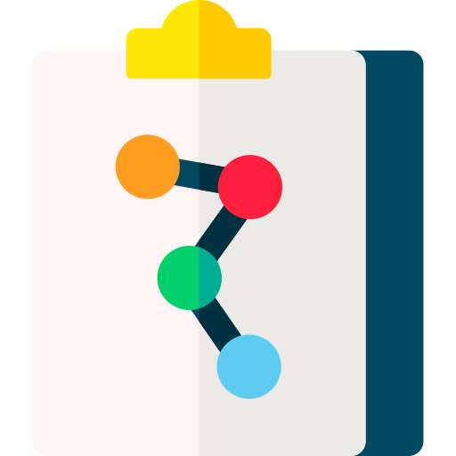

Native visionImages join the conversation.
DEEPASTRA / THE FIELD TEST
 AstraThe direction
AstraThe direction DeepSeekThe execution
DeepSeekThe executionAstra directs. DeepSeek builds.
17 initial design conditions. Two favourites.
16 websites and one timeout. Revision loops share starting builds. These are 17 conditions, not 17 independent attempts.
Your tools. A different execution engine.
DeepSeek Highpython3 /path/to/DeepAstra/launch.py run --cwd .A DeepSeek session using the Codex CLI harness.
Vision, longer context and lower API rates.

Native visionImages join the conversation.
384K maximum output.
Off-peak costs half the peak rate.
Model: deepseek-flash. Current tariff, not a countdown promotion. Source ↗
AA rows: DeepSeek max; Astra, Sol and Grok xhigh. Our next DeepSeek tests use High. Snapshot: 12 September 2026.
Design. Business. Your operating system.
Same reference. Two independent builds.
The approximately 22× API cost difference accompanied different quality. Hybrid superiority remains unproven. Existing DeepSeek Max result retains its original setting.
Jack’s preferred design.
Same 50,250 rows. Two independent reports.
17 accuracy checks passed by each model. Total task cost was not measured. Open the report for interpretation and evidence.
Astra scopes. DeepSeek implements. Astra reviews.
Business UI applied to the dashboard on a separate branch. Four tabs checked. Estimated DeepSeek inference: $0.096. Astra supervision is excluded.
THE COST OF USEFUL WORK
Weighted benchmark tasks per $10.
Lower benchmark task cost.
Different performance profiles.
4.3ASTRA8.5SOL37.0DEEPSEEKCalculated from AA costs: Astra $2.31, Sol $1.18, DeepSeek $0.27. Weighted suite averages, not guaranteed completed jobs. Source ↗
Token use changes the saving.
ILLUSTRATIVE OUTPUT-TOKEN MIX
$10.48 versus $50.00
AA usage snapshot. The illustration holds total output tokens fixed; actual agents use different volumes. Source ↗
Weighted output tokens per benchmark task.
A fixed 1M output tokens. Astra $50/M; DeepSeek off-peak $0.60/M. Input, extra reasoning, retries and quality are excluded. This is arithmetic, not a result.
Direct API. USD per million tokens.
deepseek-flashPeak: weekdays 01:00–04:00 and 06:00–10:00 UTC. All other hours are off-peak.
Published rates checked 12 September 2026. Subscription access and media-generation credits are separate. Source ↗
The saving has to survive the review.
The slider describes allocation of work, not model blending or a percentage of intelligence. No fixed quality-preserving 20/80 split or hybrid cost saving has been demonstrated. Benchmark comparisons guide the experiments. A Pareto frontier is specific to the measured cost/performance chart. Keep failed runs in the accounting. Claims about days spent testing should follow Jack’s own verified timeline.
Jack’s field guideDeepSeek releaseArtificial Analysis comparisonCodex provider configurationOpenRouter integrationBriefRelevant files + a clear targetExecuteBuild. Check. Return the result.ReviewA focused intervention